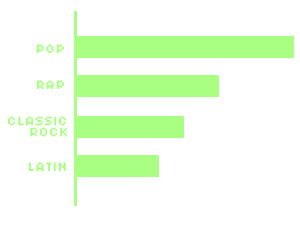

B listens to on average 4-6 hours of music a day using her favorite headphones, Beats flex which are always connected through bluetooth on her mobile device. Her top artists of the past 6 months are Amy Winehouse, Rex Orange County and The Notorious B.I.G. B listens to a variety of music genres such as Pop, Rap, Rock, Latin, and Classic Rock, however Pop is the most common.
Here you can see her favorite songs on her favorite playlist within the Spotify App.
 \